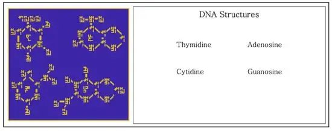

转载来源
- 原文： 《为了让外星人了解地球信息，他们拼命想出了这些“乱码”》
- 作者：瞿立建
0x00 前言
近日，美国国会就不明飞行物（UFO）现象举行了公开听证会，这是 53 年来首次。美国国防部称这类现象是不明空中现象（UAP），消息发公布，网友难免将其与外星人联系起来。事实上，大多数现象都可以被合理解释，而剩下的部分则给了人们想象的空间。我们总会发出疑问：人类是浩瀚宇宙中唯一的智慧生命吗？进入 20 世纪后，人类尝试向宇宙发出信息寻找地外文明，其中最著名的是阿雷西博信息，天文学家将地球的基本信息编成“二维码”广播到宇宙中。最近又有天文学家提出了升级版本——银河信标。不过，是否应主动联系外星人仍是个有争议的问题。
茫茫太空总让人忍不住思考一个深奥的问题：我们地球人是孤独的吗？点点星光处，是其他智慧文明之所吗？
随着科学的发展，人类不止于幻想和遐思，从 1900 年代初开始试图接收可能的外星文明信号。这还是显得被动，为什么不主动给外星文明发信息？
1958 年，美国开始实施先驱者计划（Pioneer program），发射一系列行星探测航天器。其中在 1972 年和 1973 年相继发射的先驱者 10 号和 11 号最初的目标是探索外太阳系，它们分别成为首个飞过木星和靠近土星的探测器，最终它们将飞出太阳系。美国人在先驱者 10 号和 11 号装上了一块镀金铝板（Pioneer plaque），上面刻着有关地球人的一些信息，如果探测器被外星文明捕获，外星人可以通过这块铝板快速了解地球人。铝板上刻画的符号请见下图：
是不是除了裸体男女，别的都不知所云？
除了含义模糊之外，这个铝板能不能被外星人收到，谁也没把握。这个镀金铝板就像漂流瓶，尽管以 5 万公里的时速离开了太阳系，但相对浩瀚的太空，仍不值一提。
有没有更高效的向外星人发送信号的方式？
有，发送无线电信号，这也是传播速度最快的信号形式。
0x10 阿雷西博信息
1963 年，美国波多黎各阿雷西博射电望远镜建成，口径为 305 米，落成后即成为世界上最大的单孔径望远镜，该纪录一直保持到 2016 年 7 月，被中国的 500 米口径球面射电望远镜 FAST “中国天眼” 所打破。
阿雷西博射电望远镜有一点特殊之处，它装备有 3 台雷达发射机，用途是向天体发射无线电信号，分析反射回来的信号。
美国天文学家弗兰克·德雷克（Fank Drake）曾提出用阿雷西博望远镜的雷达向太空发射无线电信号，让外星人的天文学家捕获，破解其中的信息，了解到地球人的存在。
弗兰克·德雷克（Frank Drake，1930 年 5 月 28 日－），美国天文学家，积极推动搜寻地外文明计划（SETI）。图中黑板上为以他名字命名的德雷克方程，用于推测银河系内可以和我们接触的外星智慧文明数量。
发送什么内容呢？
应该发送地球人和外星人都能懂的内容。
这样的内容有吗？
有，科学。
科学适用于全宇宙，外星人如果能发明射电望远镜，一定懂科学。
德雷克在一些人的帮助下，很快设计出了内容，于 1974 年 11 月 16 日，向武仙座球状星团 M13 发射了一段无线电信号，持续时长 169 秒，功率 450 千瓦，信号波长 126 毫米。
如果 M13 里真的有外星智慧文明，我们多久能收到回信？
很快，也就 5 万年吧，因为 M13 距离地球 2.5 万光年。
在我们静静等待外星人的回复的时候，不妨欣赏一下，美国天文学家发送了什么信息。
这段信号转化成音频，请你点击，听一听：
对声音比较敏感的读者也许能听出，这段音频有两个音高。我们可以把音高系列记录下来，高音记为 0，低音记为 1，我们将得到：
共 1679 个 0 或 1，就是 1679 比特的信息量。
德雷克希望外星人将这个字符串排列成矩形。将 1679 做质因子分解，1679 = 23 x 73，因此，1679 个 0 或 1 排列成矩形，只有两种排列方式： 23 行 73 列，或 73 行 23 列。不过，如果按前者排列，得到的图案是白噪声；如果按后一种方式排列，一个有意义的像素位图便会浮现出来。
那我们看看信息的内容是什么。
为了便于观察，我们做成彩色的：
0x11 第一部分
先看第一部分，即下图中的白色方块，你能看出表示什么吗？
这是用二进制表示的数字 1-10 。下面解释一下：
第四行白点是定位符，标记二进制数字的起始点。定位符上面三行，从下往上依次为二进制数的三位：2⁰、2¹、2²；然后跳到下一列，从下往上依次为2³、2⁴、2⁵。下图标出二进制与十进制数字的对应：
0x12 第二部分
下一部分，下图中紫色方块部分：
同样，最下一行是占位符。容易看出，这是 5 个二进制数，即 1、6、7、8、15，这五个数代表 DNA 所包含的 5 种化学元素的原子序数，由左至右分别为氢（1）、碳（6）、氮（7）、氧（8）和磷（15）。
0x13 第三部分
再下一部分是 12 组绿色方块，有了前面的经验，我们可以很快写出每组方块所表示的数字，见下图：
这些数字是什么意思？
12 组绿色方块代表 12 个分子，对应的 5 位数字代表分子的组成，即上一段信息中氢、碳、氮、氧和磷五种原子的个数。把分子式写出来，它们是 DNA 的组成部分：1、3 行是脱氧核糖和四种碱基；2、4 行是磷酸盐。总结如下：
- 第 1 行: 脱氧核糖
C₅OH₇、腺嘌呤C₅H₄N₅、胸腺嘧啶C₅H₅N₂O₂、脱氧核糖C₅OH₇ - 第 2 行: 磷酸盐
PO₄、磷酸盐PO₄ - 第 3 行: 脱氧核糖
C₅OH₇、胞嘧啶C₄H₄N₃O、鸟嘌呤C₅H₄N₅O、脱氧核糖C₅OH₇ - 第 4 行: 磷酸盐
PO₄、磷酸盐PO₄
0x14 第四部分
再下一部分，如下图：
蓝色代表的是 DNA 双螺旋结构。
中间的白色方块是二进制数，11111111 11110111 11111011 01011110（二进制）= 4,294,441,822（十进制），这个巨大的数字什么意思？
它表示人类基因组中碱基的数目。不过，这是 1974 年的科学认识，现在的科学结果约为 30.55 亿。
0x15 第五部分
再下一部分，图案如下图：
红色部分是地球人的形象。左侧水平方向四个白点代表二进制数字 1110（十进制为 14）。这里横着写是暗示，要用 14 乘以信号的波长 126mm，14 × 126mm = 1,764mm，代表当时美国男人的平均身高。
右边的白色图案为二进制数字，从右下起，000011 111111 110111 111011 111111 110110（二进制） = 4,292,853,750（十进制），左上角的白点表示最低有效位。这一数字代表 1974 年地球上的人口总数。
0x16 第六部分
继续往下，即黄色方块部分。
这部分展示的是太阳系，最左边最大的图案代表太阳，右边依次是九大行星（在 1974 年，冥王星还被归为行星）；其中第三位的地球被升高了一格，代表该信息是从地球发出，同时靠近人类形态图案，表示人类生存于地球上。
0x17 第七部分
终于到了最后一部分：
紫色图案圆弧部分代表发送此信息的阿雷西博望远镜，M 形部分为信号反射示意图。水平白色方块为二进制数字，100101 111110（二进制）= 2,430（十进制），2430 × 126mm = 306,180mm，表示望远镜的口镜。
阿雷西博信息释义完毕，大家什么感觉，是恍然大悟还是更加迷糊？
如果你感觉参不透，不用难为情。当年它被设计出来，征询意见的时候，连多位诺贝尔奖得主都看不懂。我们地球人里最聪明的头脑都猜不透的关于自己的信息，外星人得聪明成什么样才能破解得出？
1999 年和 2003 年，天文学家利用叶夫帕托里亚 RT-70 射电望远镜向太阳系多个邻近恒星发射了无线电信息，称之为宇宙来电（Cosmic Call）。
宇宙来电也是用二进制编码的，与阿雷西博信息一脉相承。它的信息内容比阿雷西博信息更丰富：有数学、物理学、天文学、地理学、生物化学、人体形态、等各领域的知识，并力求做到内容自洽，便于外星人解读；最后还给外星人出了几道题，等待外星人发来答案。内容太多了，这里就不一一解读了，感兴趣的读者，可以参考文后链接[1]。
0x20 银河信标
目前为止，地球人已经向外星人发送了 12 次信息。
最近，来自美国、英国、荷兰、中国（来自北京师范大学和武汉大学）的科学家，推出了升级版外星信息编码——银河信标（Beacon in the Galaxy，BITG）。银河信标详细内容于3月25日发表在学术期刊 Galaxies 上[2]。

银河信标呈现信息的方式和阿雷西博信息一样，是二进制位图，内容也是局限于自然科学。
银河信标共有十三部分内容，见下图：
0x21 数学
第一部分内容是向外星人介绍地球人的数学。
我们地球人通常使用十进制数字，但不能指望外星人也使用十进制数字，但可以大胆推定外星人懂二进制数字。银河信标中按如下方式，用二进制计数法表示出我们地球人使用的十进制计数法。
上图中第一部分，是用三种方式表示数字。
第一种方式是点的个数（如上图是 7 个点表示 7），第二种方式是四位二进制数，第三种方式是人类的数字。三种方式用类似 ≠ 的符号隔开，这个符号就是等于号 =。
阿拉伯数字 0-9 在银河信标里表示方法如下：
图中还给出了两位十进制数字的表示方法，比如数字14，表示方法如下：
熟悉了十进制数字的写法，银河信标下半部分的质数，也就比较容易看懂了。最下面一行是目前已知最大质数，要用到银河信标第二部分内容 —— 一些基本的数学运算符号。
图上涉及的符号如下：
从图上挑出几例，考考你：
上面四式分别表示：4×3=12，1−2=−1，3÷2=1.5，1÷9=0.1111。
现在，对这些符号是不是有感觉了？那么，你看下图，是不是一下能看懂？
对，这是指数运算。
再下一步分是方程与函数：
图中定义了三个变量，设分别对应 a，b，c：
¥a，意思是解关于 a 的方程。
最后，还画了的函数 b=a³ 图像。
0x22 物理
向外星人介绍完数学，然后开始介绍物理学。
首先介绍物理量的单位。外星人会用我们地球人的国际单位制SI吗？
不太可能，连我们地球人都还没能统一单位制。
我们必须要用宇宙普适常量定义单位。银河信标选择了氢原子光谱。
氢元素是宇宙中最多的元素，外星智慧文明一定能将氢原子研究得很清楚，不仅懂氢原子由一个质子和一个环绕质子的电子组成，还懂氢原子的超精细谱线。
氢原子处于基态时，质子和电子的自旋有两种状态，平行或反平行。这两种状态能量略有差别，前者略高于后者，氢原子从前者跃迁到后者时，会有辐射，这就是氢原子的超精细谱线，波长约为 21cm，频率约为 1420MHz。
质子和电子的自旋从平行变成反平行，这一跃迁发生的概率极低，因此，氢原子超精细谱线在地球上的实验室里无法看到，但星际介质中的天然氢原子含量相当大，可以发出超精细辐射，并被射电望远镜观测到。外星天文学家也应当能熟知这条谱线。
银河信标通过以下信息，向外星文明约定了长度和时间单位，分别是氢原子超精细谱线的波长和周期：
左上角的符号表示氢原子，旁边描述了氢原子的中心是质子，其有一个电子环绕着质子旋转。
右上角的式子，说的是秒和赫兹的关系，即秒是赫兹的倒数。
右下角的图案表示的是，质子和电子的自旋由平行状态跃迁到反平行状态，并释放辐射。
大家应该有经验看懂这种图了吧？对照着右边的英文提示，应该不难猜出后面各符号的含义。
上图最后一条信息值得说一下，这是时间戳，即信息发送时间。地球人和外星人纪元不同，如何说明时间？好在，地球人和外星人可以找到一个共同的时间起点——大爆炸。图中最后一条信息说的就是，大爆炸之后 4.355 x 10¹⁷ 秒的时候，地球发送此信息。
0x23 化学与生命科学
银河信标下一部分开始谈化学元素。下图中的信息为氢原子光谱和几种化学元素的原子序数。
有了以上数学、物理、化学知识，就可以呈现关于地球生命遗传物质的基本单元—— DNA 的四种碱基。根据上图中的化学元素符号，结合地球人正常的 DNA 结构式，不难看懂银河信标里四种碱基的表示方式。

DNA 的双螺旋结构对于其遗传功能至关重要。下图呈现的是地球人男女的体型和 DNA 双螺旋结构。
0x24 地球特征
银河信标然后直观地呈现了太阳系、地球地图：
银河信标第十一部分展示了地球特征，如第九部分所示，地球有陆地、海洋、大气，人生活在陆地上，陆地上有山，最高高于海平面 8848 米，海洋最深处 11000 米。图上还标出了陆地、海洋、大气中一些物质组成。
最后，邀请外星人与地球人联系，联系频率 2380MHz。最后还给出了地球的位置坐标。
银河信标第十三部分未完全展示，地球的位置坐标的技术细节太繁琐，本文不做介绍。
0x30 发还是不发？
银河信标只是设计出来了，尚未发送。
从哪里发送？
第一个向外星发送无线电信息的阿雷西博望远镜，于 2020 年 12 月 1 日在退役前夕彻底损毁。
好在地球上还有两台设备，可以承担联系外星人的重任，一个是 “中国天眼”；另一个是美国的艾伦望远镜阵列（Allen Telescope Array，ATA），占地 1 公顷，也曾称为公顷望远镜。
不过，中国天眼和艾伦望远镜阵列都只能接收信号，而不能发送信号。将望远镜施加改造，装备上发射信息的雷达，难度不大。改造之后，这两个天文装置都能向银河系中最可能存在智慧生命的天域发射信号。
另一个关键问题是，发还是不发？
尽管天文学家已经多次向可能存在的外星文明发送信息，但一直有声音反对这种活动。
向可能存在的外星人主动发送信息，有可能纯属白费人力、物力、财力。这还算不了什么，更严重的是，可能招致危险。

这种危险体现在中国著名科幻作家刘慈欣在小说中提出的“黑暗森林法则”：
宇宙就像是一座黑暗森林，每个文明都是带枪的猎人，像幽灵般潜行于林间，轻轻拨开树枝探索外界，同时竭力不发出脚步声隐藏行踪，因为林中到处都有与他一样潜行的猎人。如果他发现了别的生命不管是不是猎人，不管是天使还是魔鬼，能做的只有一件事：开枪消灭之，在这片森林中，他人就是地狱，永恒的威胁来源、任何暴露自己存在的生命都将很快被消灭。
小说家言，不足为凭。但也有声望卓著的科学家表示，主动联系外星人很危险。
史蒂芬·霍金曾在一个电视节目中说，不要联系外星人，外星人找到地球，就像哥伦布找到新大陆，我们地球人将重演印第安人的悲剧。
美国科学家和科幻小说作家大卫·布林（David Brin，1950 年 10 月 6 日—）在 2006 年发表一篇文章[3]称，主动向外星人发送无线电波，有可能将地球人置于危险之中，主动搜寻外星人的狂热分子应该停下来，充分听取和讨论各领域 —— 不仅包括天文学，还包括且不限于历史学、宇宙生物学、伦理学、动物行为学的专家的意见。
2006 年 10 月 11 日，Nature 发表社论[4]，称外星文明未必和善，即便真联系到了和善的外星文明，也可能在我们地球人内部带来严重的混乱，搜寻外星文明界应该公开透明地向外界阐述清楚本领域人士的讨论，不要有面大望远镜，就自封为地球大使。
有科学家回应了这些担忧。
2008 年，俄罗斯雷达天文学家、搜寻外星文明专家扎伊采夫发表文章[5]称，只要地球人搞雷达天文学，就不要担心向外星文明发信息。地球人的雷达天文学研究发出的信号早就照亮了整个天空，向外星文明发出的信息仅相当于沧海一粟不值一提。要想根除后患，除非我们连雷达天文学研究也禁止了，但是，如果那样的话，我们将无法监视和预防小行星撞击地球，最后还是走向毁灭。
亚历山大·扎伊采夫（Alexander Zaitsev，1945 年 5 月 19 日 —— 2021 年 11 月 29 日），俄罗斯和苏联天文学家和无线电工程师，主要研究雷达天文学设备、近地小行星、外星文明搜索等。
2016 年，Nature Physics 发表文章称[6]，人类泄露出去的无线电信号很弱，只能到达距离我们最近的 7000 颗恒星；即便是这 7000 颗恒星附近的外星文明，如果不用口径超过 300 米的射电望远镜，也不大可能监测到人类泄露的无线电信号。追踪小行星的雷达信号，胡乱分布于太空中，不能与直接通向具体恒星系统的雷达束相提并论。
有些人认为，科技更高级的外星文明，在道德上也更高级，会和平对待地球人。对此，作者表示这种人 too simple, sometimes naive。
Nature Physics 的文章说，耐心应该是一个先进文明应具备的素质，我们应该锻炼耐心，等条件成熟的时候，再联系外星人，在这之前，不要让没有耐心的地球人搞事情。
这篇文章很快招来了反驳文章[7]。文章首先说，地球人泄露出去的电磁波足以让外星文明知道地球人的存在，现在担心外星人入侵，已经晚了。另一方面，损失厌恶心理让人们更关注联系外星人的风险，而更少注意联系外星人的好处。
文章还讨论了一个问题，要不要联系外星人，究竟谁说了算？地球人取得共识，按共识来做吗？这不现实，不可能取得共识的。更可行的方式是科学家说了算，按科学界惯例来做，同行评议。
先不谈这些争议，还是说银河信标。
地球人已经确认了 5000 多颗系外行星，也许在不久的未来就会发现宜居行星，甚至外星智慧文明，现在应做些准备。
银河信标这套信息，形式简洁，内容丰富，能发送到最可能有外星人的天域，所以也能极大提高在久远的未来收到外星人回复的概率。
外星人如果收到并破解了银河信标，会回复什么呢？
我们希望至少回复银河信标里已有的内容，比如他们的数字系统、回信时间、在太空的位置坐标、遗传物质（外星人有可能不是碳基生命）、外形等，还有可能提供其他信息，比如外星人的文化、星际交流语言等。
与外星人通信，是宇宙科学探索中一个令人神往的领域，现在在技术上也变得可行，我们人类有激动人心的故事与外星人分享，也渴望了解外星人的故事，现在，我们有手段做到了。
联系外星人，干还是不干？这是值得每个人思考的问题。
0xFF 参考资料
[1]https://blog.plover.com/aliens/dd/intro.html[2]https://www.mdpi.com/2075-4434/10/2/55[3]http://www.davidbrin.com/nonfiction/shouldsetitransmit.html[4]Nature, 2006, 443, 606，https://www.nature.com/articles/443606a[5]http://jre.cplire.ru/jre/may08/2/text_e.html[6]Nature Physics, 2016, 12, 720, https://www.nature.com/articles/nphys3852[7]Nature Physics, 2016, 12, 890, https://www.nature.com/articles/nphys3897